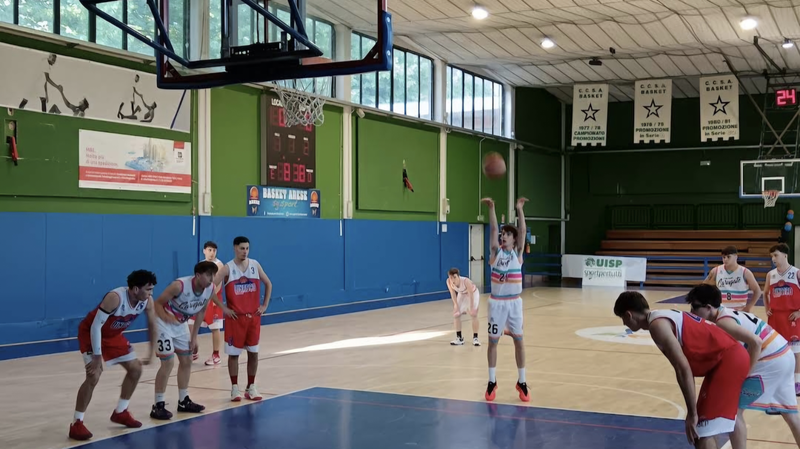
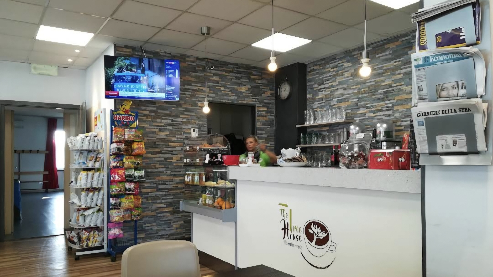

Chi Siamo
SG Sport
SG Sport è una struttura sportiva polifunzionale che offre spazi e servizi dedicati allo sport, al tempo libero e agli eventi. Il palazzetto ospita diverse discipline sportive e dispone di aree attrezzate per attività ricreative di ogni tipo, rendendolo un punto di riferimento per la comunità locale.
Dal 2016 SG.Sport ha deciso di allargare il panorama calcistico, ampliando le varie categorie, costruendo un proprio SETTORE GIOVANILE e riportando finalmente il calcio agonistico ad Arese. La crescita è stata davvero esplosiva, passando in meno di due anni a 300 atleti. Numerosi campionati vinti con l'attività di base, piazzamenti prestigiosi con l'attività agonistica, atleti che hanno fatto il grande salto in Società professionistiche, due edizioni del Torneo Internazionale con Squadre Top Club e numerose altre iniziative!
Servizi e Attività
La struttura offre una vasta gamma di servizi e attività, tra cui:
- Campi e spazi sportivi al coperto per diverse discipline
- Organizzazione e allestimento di eventi sportivi e ricreativi
- Attrazioni per famiglie e bambini, tra cui gonfiabili e giochi
- Bar interno CICI, punto di ristoro per atleti e visitatori
- Gestione di spazi per feste private e manifestazioni
Galleria
Alcune immagini degli spazi e dei prodotti dell'azienda.




Dove Siamo
Posizione della struttura SG Sport: